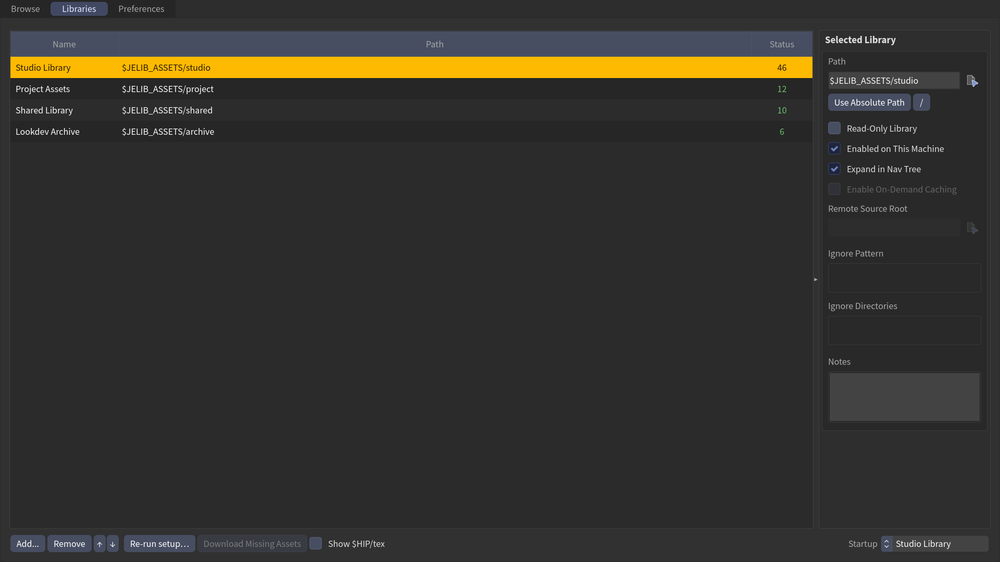

Libraries tab
The Libraries tab is where you add, remove, and manage the folders JElib scans for assets. Each row is one library.
For the concepts behind base folders and portable paths, see Add your libraries. This page is the control-by-control reference.

The library table
Libraries are listed in a three-column table:
| Column | Shows |
|---|---|
| Name | the library's display name (double-click to rename) |
| Path | its folder (double-click to edit; hover for the full path) |
| Status | scan result — see below |
Drag a row to reorder it, or use the ↑ / ↓ buttons in the footer (Move library up / Move library down). Order here is the order libraries appear in the nav tree.
Ctrl- or Shift-click selects multiple rows — the right-click actions (Disable / Enable on This Machine, Remove) then apply to the whole selection at once.
What Status means
| Status | Meaning |
|---|---|
| 1,234 | assets found (the count) |
| 0 | folder exists but is empty |
| … | still scanning |
| Cloud | a cloud folder that's paused or still syncing |
| Not found | the folder is missing |
| No path | no path set yet |
| Disabled | turned off on this machine |
Hover the count on a NAS library with Trust Cache on Reload turned on (Remote & synced libraries) for a reminder that a plain Reload won't check that library for changes.
Add a library
Three ways:
- Click Add… in the footer and pick a folder (Select Library Folder).
- Drag a folder from Explorer/Finder straight onto the table.
- Right-click empty space in the table → Add Library…
The new library is named after the folder and starts editable and writable.
Remove a library
Select a row and click Remove, or right-click the row → Remove Library (with several rows selected: Remove N Libraries — one undo step). There's no confirmation — but it's undoable (Ctrl+Z). Removing a library only drops it from the list; it never touches the files on disk.
The Selected Library inspector
Select a row to open the Selected Library pane on the right (drag the divider to collapse it). It exposes everything about that one library:
Path
- The folder path, with a chooser button (Select Library Folder).
- Use Relative Path rewrites the path as
$JELIB_ASSETS/…so your config stays portable across machines (toggles to Use Absolute Path). See Add your libraries. - The / button flips between forward slashes and backslashes.
Toggles
- Read-Only Library — treat the library as managed by an external tool. Disables folder drag-move, new folder, delete, and drops. Auto-set for Greyscalegorilla / Quixel / Fab on first run.
- Enabled on This Machine — turn the library on or off for this computer only. Saved locally; your synced library list is unchanged.
- Expand in Nav Tree — start this library expanded (uncheck to start collapsed).
- Enable On-Demand Caching — copy assets locally on demand from a remote root. When on, set the Remote Source Root below.
Remote Source Root (when caching is on) — the remote/cloud path assets are pulled from.
Local cache size (when caching is on) — Measure reports exactly what the library's local cache holds on disk (size and file count). Evict Library… frees that space by deleting only files verified to still exist on the remote — anything not mirrored survives, the remote is never touched, and files re-download on next use. See Remote & cloud libraries.
Ignore Pattern / Ignore Directories — chips that exclude matching files or folders from scanning.
Notes — free text; saves itself a moment after you stop typing.
Read-only vendor libraries
Greyscalegorilla, Quixel, and Fab libraries are flagged Read-Only automatically — JElib never writes into those trees. On-demand caching still works for them, because it only reads the remote and writes to your local cache.
Re-run setup
Re-run setup… (footer) reopens the first-run welcome flow to re-detect your assets folder and add any libraries it finds. It's additive — it never removes or rewrites libraries you already have.
Show $HIP/tex (Local Library)
The Show $HIP/tex checkbox (footer) surfaces a Local Library at the top of
the nav tree whenever a tex folder sits next to the current scene file. It follows
the scene — opening, Save As, or a new scene re-resolves it — and it simply isn't
listed when no tex folder exists (it never appears in the library table).
Imports from it write portable $HIP/tex/… texture paths, so the hip and its
textures travel to another machine or artist without relinking. Textures dropped
into the folder appear on any Reload — this library is always scanned fresh.
Startup collection
The Startup dropdown (footer, right) picks a collection to auto-select the next time the panel opens. It's filled from your nav tree after each scan.
No manual rescan needed
There's no Scan button here — editing a path, adding or removing a library, or toggling Enabled rescans automatically. The Status column always reflects the latest scan.